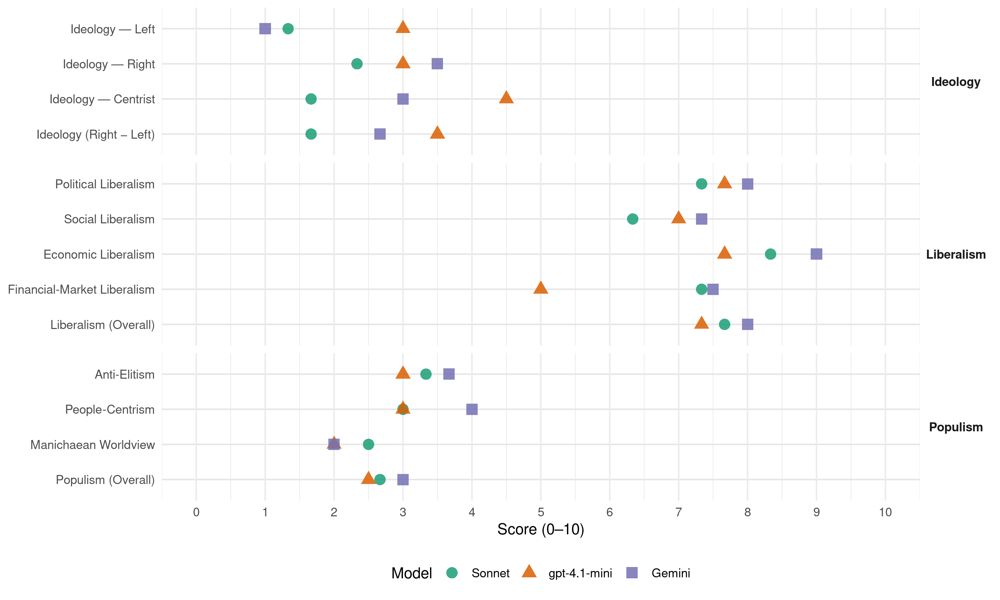

ODS (Czech Republic, 2006)
manifesto_id 82413_200606
Get full text: This site shows derived annotations and short verbatim quotes only. The full manifesto text is © Manifesto Project / WZB — obtain it via manifesto-project.wzb.eu using the manifesto_id above.
Headline scores
| Dimension | Sonnet | gpt-4.1-mini | Gemini |
|---|---|---|---|
| Populism (Overall) | 2.7 | 2.5 | 3.0 |
| Anti-Elitism | 3.3 | 3.0 | 3.7 |
| People-Centrism | 3.0 | 3.0 | 4.0 |
| Manichaean Worldview | 2.5 | 2.0 | 2.0 |
| Ideology (Right − Left) | 1.7 | 3.5 | 2.7 |
| Liberalism (Overall) | 7.7 | 7.3 | 8.0 |
| Political Liberalism | 7.3 | 7.7 | 8.0 |
| Social Liberalism | 6.3 | 7.0 | 7.3 |
| Economic Liberalism | 8.3 | 7.7 | 9.0 |
| Financial-Market Liberalism | 7.3 | 5.0 | 7.5 |
Evidence per dimension
Economic Liberalism
Gemini · score 9.0 · verified · chunk 1
“Zavedeme jednotnou 15% daòovou sazbu fyzických a právnických osob”
Co navrhujeme Zavedeme jednotnou 15% daòovou sazbu fyzických a právnických osob a DPH. Každý bude platit stejné procento ze svých pøíjmù
Gemini · score 9.0 · verified · chunk 2
“mezi poskytovateli vznikne zdravá konkurence”
rozhodovat klienti sociálních služeb a mezi poskytovateli vznikne zdravá konkurence. Velmi rychle se prosadí
Gemini · score 9.0 · verified · chunk 3
“pøispìje k liberalizaci ekonomického prostøedí”
na fungování jednotného vnitøního trhu, pøispìje k liberalizaci ekonomického prostøedí uvnitø i vnì EU
gpt-4.1-mini · score 8.0 · verified · chunk 1
“nízké danì umožòují podnikatelskému sektoru vytváøet vlastní kapitál”
Nízké danì umožòují podnikatelskému sektoru vytváøet vlastní kapitál a ekonomicky expandovat, nízké danì jsou trvalou ekonomickou pobídkou pro zahranièní firmy, aby zde umístily svoje výrobní kapacity a kapitál, a také aby zde zdaòovaly zisky.
gpt-4.1-mini · score 7.0 · verified · chunk 2
“Zrušením minimální mzdy vzniká široké pole pro vznik nových pracovních míst”
Snížením sociálních odvodù, a také zrušením minimální mzdy (není pro ni dùvod v souvislosti se zavedením státem zaruèeného pøíjmu) vzniká široké pole pro vznik nových pracovních míst.
gpt-4.1-mini · score 8.0 · verified · chunk 3
“Podporujeme rozsahem i vìcnì omezenou evropskou legislativu, která bude mít pozitivní dopad na fungování jednotného vnitøního trhu”
Co budeme v EU prosazovat Chceme zachovat daòovou a fiskální politiku, vèetnì zdravotních, sociálních a penzijních systémù, ve výluèné pravomoci národních orgánù. Podporujeme vzájemnou konkurenci tìchto systémù uvnitø EU a z toho vyplývající nezbytnou dynamiku pro ekonomický rùst. Podporujeme rozsahem i vìcnì omezenou evropskou legislativu, která bude mít pozitivní dopad na fungování jednotného vnitøního trhu, pøispìje k liberalizaci ekonomického prostøedí uvnitø i vnì EU a nebude zátìží pro obèany ÈR.
Sonnet · score 9.0 · verified · chunk 1
“rovná nízká 15% daòová sazba motivuje obèana”
Bude opìt platit rovnice více práce = více penìz, rovná nízká 15% daòová sazba motivuje obèana, aby si více vydìlával. Bude znamenat vyšší pøíjmy
Sonnet · score 8.0 · verified · chunk 2
“zrušením minimální mzdy”
Snížením sociálních odvodù, a také zrušením minimální mzdy (není pro ni dùvod v souvislosti se zavedením státem zaruèeného pøíjmu) vzniká široké pole pro vznik nových pracovních míst.
Sonnet · score 8.0 · verified · chunk 3
“liberalizaci ekonomického prostøedí uvnitø i vnì EU”
Podporujeme rozsahem i vìcnì omezenou evropskou legislativu, která bude mít pozitivní dopad na fungování jednotného vnitøního trhu, pøispìje k liberalizaci ekonomického prostøedí uvnitø i vnì EU
Financial-Market Liberalism
Gemini · score 8.0 · verified · chunk 1
“prodejem akciových podílù na èeských i zahranièních trzích”
naopak,mnohé z tìchto podnikù je vhodné privatizovat prodejem akciových podílù na èeských i zahranièních trzích. To navíc bude i pøíspìvkem k povzbuzení
Gemini · score 7.0 · verified · chunk 2
“dobrovolné dùchodové pøipojištìní”
Tøetím pilíøem je dobrovolné dùchodové pøipojištìní. Nyní je u nás uzavøeno
gpt-4.1-mini · score 5.0 · verified · chunk 1
“výnosu z privatizace bude pøedem urèeno a bude pøednostnì použito na umoøení státního dluhu”
Použití výnosu z privatizace bude pøedem urèeno a bude pøednostnì použito na umoøení státního dluhu a pro financování transformaèní fáze dùchodové reformy.
Sonnet · score 8.0 · verified · chunk 1
“pøíspìvkem k povzbuzení èeského akciového trhu”
mnohé z tìchto podnikù je vhodné privatizovat prodejem akciových podílù na èeských i zahranièních trzích. To navíc bude i pøíspìvkem k povzbuzení èeského akciového trhu, který dlouhodobì strádá nedostatkem bonitních titulù
Sonnet · score 7.0 · verified · chunk 2
“úvìr od Evropské investièní banky”
umožníme, aby školám na základì projektu jejich rùstu byl prostøednictvím urèené domácí banky poskytnu úvìr od Evropské investièní banky.
Sonnet · score 7.0 · verified · chunk 3
“pohledávky a závazky fondu navrhujeme prodat ve výbìrovém øízení bance”
Jsme pro postupné zrušení Státního fondu rozvoje bydlení. Pohledávky a závazky fondu navrhujeme prodat ve výbìrovém øízení bance. Zùstatek fondu chceme pøevést na kraje.
Political Liberalism
Gemini · score 8.0 · verified · chunk 1
“posílení právní jistoty obèanù vùèi státním orgánùm”
Napravíme právní ustanovení, která jsou státem zneužívána. Prosadíme zmìny zákonù smìøující k posílení právní jistoty obèanù vùèi státním orgánùm. Prosadíme editaèní povinnost
Gemini · score 8.0 · verified · chunk 2
“Svobodné mediální prostøedí považujeme za základní pøedpoklad”
7. Média Svobodné mediální prostøedí považujeme za základní pøedpoklad pro fungování demokratické spoleènosti.
Gemini · score 8.0 · verified · chunk 3
“Stabilita právního øádu, nikoli „legislativní optimismus“”
Dvanáctero pro kvalitní a funkèní právní øád Obecné principy 1. Stabilita právního øádu, nikoli „legislativní optimismus“. Budeme vždy velmi peèlivì zvažovat
gpt-4.1-mini · score 7.0 · verified · chunk 1
“právní jistoty”
Prosadíme zmìny zákonù smìøující k posílení právní jistoty obèanù vùèi státním orgánùm. Prosadíme editaèní povinnost státu pro výklad zákonných norem. Tím se zvýší právní jistota zamìstnancù i zamìstnavatelù.
gpt-4.1-mini · score 8.0 · verified · chunk 2
“Svobodné mediální prostøedí považujeme za základní pøedpoklad pro fungování demokratické spoleènosti”
Svobodné mediální prostøedí považujeme za základní pøedpoklad pro fungování demokratické spoleènosti. V posledních mìsících jsme svìdky pokusù o omezování této svobody.
gpt-4.1-mini · score 8.0 · verified · chunk 3
“Zákony by nemìly zacházet do neúmìrných podrobností. Pøedpisy musí být pro lidi, nikoli pro úøad.”
Kvalita právních pøedpisù. Budeme peèovat o srozumitelnost a pøimìøený styl právních pøedpisù. Zákony by nemìly zacházet do neúmìrných podrobností. Pøedpisy musí být pro lidi, nikoli pro úøad. Právo musí sloužit praktickým potøebám obèanù, což platí zejména o normách, které se týkají podnikání.
Sonnet · score 7.0 · verified · chunk 1
“posílení právní jistoty obèanù vùèi státním orgánùm”
Prosadíme zmìny zákonù smìøující k posílení právní jistoty obèanù vùèi státním orgánùm. Prosadíme editaèní povinnost státu pro výklad zákonných norem.
Sonnet · score 8.0 · verified · chunk 2
“Svobodné mediální prostøedí považujeme za základní pøedpoklad”
Svobodné mediální prostøedí považujeme za základní pøedpoklad pro fungování demokratické spoleènosti. V posledních mìsících jsme svìdky pokusù o omezování této svobody.
Sonnet · score 7.0 · verified · chunk 3
“principy demokracie, základní funkce státu”
bránit životní zájmy Èeské republiky, tedy její existenci, suverenitu, územní celistvost, principy demokracie, základní funkce státu a zajištìní základních podmínek pro život obèanù.
Liberalism (Overall)
Gemini · score 8.0 · verified · chunk 1
“Zavedeme jednotnou 15% daòovou sazbu fyzických a právnických osob”
Co navrhujeme Zavedeme jednotnou 15% daòovou sazbu fyzických a právnických osob a DPH. Každý bude platit stejné procento ze svých pøíjmù
Gemini · score 8.0 · verified · chunk 2
“mezi poskytovateli vznikne zdravá konkurence”
rozhodovat klienti sociálních služeb a mezi poskytovateli vznikne zdravá konkurence. Velmi rychle se prosadí
Gemini · score 8.0 · verified · chunk 3
“pøispìje k liberalizaci ekonomického prostøedí”
na fungování jednotného vnitøního trhu, pøispìje k liberalizaci ekonomického prostøedí uvnitø i vnì EU
gpt-4.1-mini · score 7.0 · verified · chunk 1
“nízké danì umožòují podnikatelskému sektoru vytváøet vlastní kapitál”
Nízké danì umožòují podnikatelskému sektoru vytváøet vlastní kapitál a ekonomicky expandovat, nízké danì jsou trvalou ekonomickou pobídkou pro zahranièní firmy, aby zde umístily svoje výrobní kapacity a kapitál, a také aby zde zdaòovaly zisky.
gpt-4.1-mini · score 7.0 · verified · chunk 2
“Svobodné mediální prostøedí považujeme za základní pøedpoklad pro fungování demokratické spoleènosti”
Svobodné mediální prostøedí považujeme za základní pøedpoklad pro fungování demokratické spoleènosti. V posledních mìsících jsme svìdky pokusù o omezování této svobody.
gpt-4.1-mini · score 8.0 · verified · chunk 3
“Podporujeme rozsahem i vìcnì omezenou evropskou legislativu, která bude mít pozitivní dopad na fungování jednotného vnitøního trhu”
Co budeme v EU prosazovat Chceme zachovat daòovou a fiskální politiku, vèetnì zdravotních, sociálních a penzijních systémù, ve výluèné pravomoci národních orgánù. Podporujeme vzájemnou konkurenci tìchto systémù uvnitø EU a z toho vyplývající nezbytnou dynamiku pro ekonomický rùst. Podporujeme rozsahem i vìcnì omezenou evropskou legislativu, která bude mít pozitivní dopad na fungování jednotného vnitøního trhu, pøispìje k liberalizaci ekonomického prostøedí uvnitø i vnì EU a nebude zátìží pro obèany ÈR.
Sonnet · score 8.0 · verified · chunk 1
“rovná nízká 15% daòová sazba motivuje obèana”
Bude opìt platit rovnice více práce = více penìz, rovná nízká 15% daòová sazba motivuje obèana, aby si více vydìlával. Bude znamenat vyšší pøíjmy
Sonnet · score 8.0 · verified · chunk 2
“Svobodné mediální prostøedí považujeme za základní pøedpoklad”
Svobodné mediální prostøedí považujeme za základní pøedpoklad pro fungování demokratické spoleènosti. V posledních mìsících jsme svìdky pokusù o omezování této svobody.
Sonnet · score 7.0 · verified · chunk 3
“liberalizaci ekonomického prostøedí uvnitø i vnì EU”
Podporujeme rozsahem i vìcnì omezenou evropskou legislativu, která bude mít pozitivní dopad na fungování jednotného vnitøního trhu, pøispìje k liberalizaci ekonomického prostøedí uvnitø i vnì EU
Anti-Elitism
Gemini · score 3.0 · verified · chunk 1
“zamìøuje pøedevším na velmi rozšíøenou „šikanu“ malých plátcù”
Ani velmi poèetný aparát úøedníkù není schopen skuteènou výši placených daní úèinnì zkontrolovat, a proto se zamìøuje pøedevším na velmi rozšíøenou „šikanu“ malých plátcù. Tìm dopoèítává penále
Gemini · score 4.0 · verified · chunk 2
“desítky korupèních kauz pøedevším vládních pøedstavitelù”
o èemž svìdèí desítky korupèních kauz pøedevším vládních pøedstavitelù. Proti korupci nelze bojovat
Gemini · score 4.0 · verified · chunk 3
“nevyhovujících forem hospodaøení na venkovì”
transformace zemìdìlství a zakonzervování i nevyhovujících forem hospodaøení na venkovì. Celý systém dotací
gpt-4.1-mini · score 3.0 · verified · chunk 1
“vláda selhává”
Je znepokojivé, že právì v tìchto oblastech vláda selhává. Uveïme si nìkolik nejvýraznìjších pøíkladù: Rostoucí korupce v øadách tìch, kteøí mají být jejich garanty.
gpt-4.1-mini · score 3.0 · verified · chunk 2
“Snížíme prostøedky pøerozdìlované státem, èímž omezíme prostor pro korupèní jednání”
Snížíme prostøedky pøerozdìlované státem, èímž omezíme prostor pro korupèní jednání. Zrušíme regulace vytváøející prostor protekcionismu, klientelismu a korupènímu jednání.
Sonnet · score 4.0 · verified · chunk 1
“Velcí si poradí vždycky, ale malí jsou v boji se státem bezmocní”
Za klíèový prvek zamìstnanosti považujeme rozvoj malého a støedního podnikání… Velcí si poradí vždycky, ale malí jsou v boji se státem bezmocní. Naším cílem je snížit míru nezamìstnanosti
Sonnet · score 4.0 · verified · chunk 2
“Korupce je takøka všudypøítomná”
Podle Transparency International je Èeská republika tøetí nejzkorumpovanìjší zemí EU… Korupce je takøka všudypøítomná, o èemž svìdèí desítky korupèních kauz pøedevším vládních pøedstavitelù.
Sonnet · score 2.0 · verified · chunk 3
“neprùhledné prokorupèní prostøedí pøi pøidìlování”
Zároveò chceme ukonèit chaos pøi reformì armády a eliminovat neprùhledné prokorupèní prostøedí pøi pøidìlování vojenských zakázek.
Ideology — Centrist
Gemini · score 3.0 · verified · chunk 2
“Dùvìra ve správné rozhodování obèanù”
Dùvìra ve správné rozhodování obèanù a škol. Dùvìøujeme obèanùm
gpt-4.1-mini · score 4.0 · verified · chunk 1
“každý bude platit stejné procento ze svých pøíjmù”
Co navrhujeme Zavedeme jednotnou 15% daòovou sazbu fyzických a právnických osob a DPH. Každý bude platit stejné procento ze svých pøíjmù, nikoli stejnou výši danì.
gpt-4.1-mini · score 5.0 · verified · chunk 2
“Posílíme vliv obèanù na veøejné záležitosti a pøiblížíme výkon státní správy obèanùm”
Posílíme vliv obèanù na veøejné záležitosti a pøiblížíme výkon státní správy obèanùm. Veøejná správa je zkostnatìlá a pøíliš nákladná.
Sonnet · score 2.0 · verified · chunk 1
“Na hospodáøské prosperitì zemì musí vydìlat všichni obèané”
Nízká sazba vede ke zrychlení rùstu hospodáøství a omezení šedé ekonomiky i daòových únikù. Na hospodáøské prosperitì zemì musí vydìlat všichni obèané.
Sonnet · score 2.0 · verified · chunk 2
“Základním pilíøem spoleènosti je svobodný obèan”
Ctíme a posilujeme hodnoty demokratického právního øádu. Za porušení pravidel, které tyto hodnoty chrání, musí pøijít rychlý a spravedlivý trest. Slušné a poctivé lidi musí stát chránit. Základním pilíøem spoleènosti je svobodný obèan
Sonnet · score 1.0 · verified · chunk 3
“Právo musí sloužit praktickým potøebám obèanù”
Pøedpisy musí být pro lidi, nikoli pro úøad. Právo musí sloužit praktickým potøebám obèanù, což platí zejména o normách, které se týkají podnikání.
Ideology — Left
Gemini · score 1.0 · verified · chunk 1
“Zavedeme tzv. státem zaruèený pøíjem”
Pracovat za nižší mzdu bude vždy výhodnìjší, než zùstávat na sociálních dávkách. Zavedeme tzv. státem zaruèený pøíjem. Jeho výše se bude odvíjet od poètu
gpt-4.1-mini · score 3.0 · verified · chunk 1
“likviduje drobné èeské živnostníky”
Souèasná vláda ÈSSD enormnì podporuje velké firmy a likviduje drobné èeské živnostníky. Zejména zahranièním spoleènostem poskytuje nebývalé úlevy a na èeské firmy zapomíná.
gpt-4.1-mini · score 3.0 · verified · chunk 2
“Finanènì bude podporovat hlavnì ty obèany, kteøí se rozhodnou svojí vlastní ekonomickou aktivitou zabezpeèit jak sebe, tak svoji rodinu”
Finanènì bude podporovat hlavnì ty obèany, kteøí se rozhodnou svojí vlastní ekonomickou aktivitou zabezpeèit jak sebe, tak svoji rodinu. Každý obèan bude odvádìt do sociálního systému 15% sociální odvod ze svých pøíjmù.
Sonnet · score 1.0 · verified · chunk 1
“snížit a zjednodušit danì tak, aby byly firmy motivovány”
Chceme snížit a zjednodušit danì tak, aby byly firmy motivovány vytváøet nová pracovní místa. Jsou potom nejlepšími investièními pobídkami pro všechny bez rozdílu.
Sonnet · score 2.0 · verified · chunk 2
“Vysokoškolské studium je ètyøikrát ménì dostupné pro dìti z nízkopøíjmových skupin”
V Èeské republice studuje v prùmìru dvakrát ménì vysokoškolákù, než ve vyspìlých evropských zemích. Vysokoškolské studium je ètyøikrát ménì dostupné pro dìti z nízkopøíjmových skupin, než je tomu v zemích s liberálním modelem školství.
Sonnet · score 1.0 · verified · chunk 3
“Zajistíme ochranu sociálnì slabých”
Zajistíme ochranu sociálnì slabých, zejména lidí starých, invalidních a rodin s dìtmi.
Ideology (Right − Left)
Gemini · score 2.0 · verified · chunk 1
“podporuje šikovné èeské øemeslníky, obchodníky”
Náš program: staví na chytrosti, schopnosti a adaptabilitìèeského èlovìka, podporuje šikovné èeské øemeslníky, obchodníky, projektanty, lékaøe
Gemini · score 3.0 · verified · chunk 2
“Dùvìra ve správné rozhodování obèanù”
Dùvìra ve správné rozhodování obèanù a škol. Dùvìøujeme obèanùm
Gemini · score 3.0 · verified · chunk 3
“vždy maximálnì dbát národních zájmù”
Musíme být loajálním èlenem EU, ale vždy maximálnì dbát národních zájmù. Je nutné pøejímat evropské
gpt-4.1-mini · score 3.0 · verified · chunk 1
“likviduje drobné èeské živnostníky”
Souèasná vláda ÈSSD enormnì podporuje velké firmy a likviduje drobné èeské živnostníky. Zejména zahranièním spoleènostem poskytuje nebývalé úlevy a na èeské firmy zapomíná.
gpt-4.1-mini · score 4.0 · verified · chunk 2
“Snížíme prostøedky pøerozdìlované státem, èímž omezíme prostor pro korupèní jednání”
Snížíme prostøedky pøerozdìlované státem, èímž omezíme prostor pro korupèní jednání. Zrušíme regulace vytváøející prostor protekcionismu, klientelismu a korupènímu jednání.
Sonnet · score 2.0 · verified · chunk 1
“Souèasná vláda ÈSSD enormnì podporuje velké firmy a likviduje drobné”
Souèasná vláda ÈSSD enormnì podporuje velké firmy a likviduje drobné èeské živnostníky. Zejména zahranièním spoleènostem poskytuje nebývalé úlevy a na èeské firmy zapomíná.
Sonnet · score 2.0 · verified · chunk 2
“Zrychlíme a zpøísníme azylové zákonodárství”
Zrychlíme a zpøísníme azylové zákonodárství. Znemožníme imigrantùm zneužívat podmínky pobytu k páchání trestné èinnosti a k nelegálnímu zamìstnávání.
Sonnet · score 1.0 · verified · chunk 3
“neprùhledné prokorupèní prostøedí pøi pøidìlování”
Zároveò chceme ukonèit chaos pøi reformì armády a eliminovat neprùhledné prokorupèní prostøedí pøi pøidìlování vojenských zakázek.
Ideology — Right
Gemini · score 3.0 · verified · chunk 1
“podporuje šikovné èeské øemeslníky, obchodníky”
Náš program: staví na chytrosti, schopnosti a adaptabilitìèeského èlovìka, podporuje šikovné èeské øemeslníky, obchodníky, projektanty, lékaøe
Gemini · score 4.0 · verified · chunk 3
“vždy maximálnì dbát národních zájmù”
Musíme být loajálním èlenem EU, ale vždy maximálnì dbát národních zájmù. Je nutné pøejímat evropské
gpt-4.1-mini · score 2.0 · verified · chunk 1
“nepøeje lidem líným, závistivým a tým, kteøí jsou zvyklí žít na úkor ostatních”
Náš program: staví na chytrosti, schopnosti a adaptabilitì èeského èlovìka, podporuje šikovné èeské øemeslníky, obchodníky, projektanty, lékaøe, uèitele pøi realizaci jejich nápadù, nepøeje lidem líným, závistivým a tým, kteøí jsou zvyklí žít na úkor ostatních, likviduje mnoho byrokratických naøízení.
gpt-4.1-mini · score 4.0 · verified · chunk 2
“Zrychlíme a zpøísníme azylové zákonodárství. Znemožníme imigrantùm zneužívat podmínky pobytu”
Zrychlíme a zpøísníme azylové zákonodárství. Znemožníme imigrantùm zneužívat podmínky pobytu k páchání trestné èinnosti a k nelegálnímu zamìstnávání.
Sonnet · score 3.0 · verified · chunk 1
“nepøeje lidem líným, závistivým a tìm, kteøí jsou zvyklí žít na úkor ostatních”
Náš program: staví na chytrosti, schopnosti a adaptabilitì èeského èlovìka… nepøeje lidem líným, závistivým a tìm, kteøí jsou zvyklí žít na úkor ostatních
Sonnet · score 2.0 · verified · chunk 2
“Zrychlíme a zpøísníme azylové zákonodárství”
Zrychlíme a zpøísníme azylové zákonodárství. Znemožníme imigrantùm zneužívat podmínky pobytu k páchání trestné èinnosti a k nelegálnímu zamìstnávání.
Sonnet · score 2.0 · verified · chunk 3
“musíme mít vždy dostatek volnosti”
Musíme být loajálním èlenem EU, ale vždy maximálnì dbát národních zájmù. Je nutné pøejímat evropské požadavky tak, aby byly co nejménì zatìžující pro obèany i ekonomiku
Manichaean Worldview
Gemini · score 2.0 · verified · chunk 1
“nepøeje lidem líným, závistivým a tìm”
podporuje šikovné èeské øemeslníky, obchodníky, projektanty, lékaøe, uèitele pøi realizaci jejich nápadù, nepøeje lidem líným, závistivým a tìm, kteøí jsou zvyklí žít na úkor ostatních
Gemini · score 2.0 · verified · chunk 2
“Korupce pøedstavuje spoleèenské zlo”
2. Boj proti korupci Korupce pøedstavuje spoleèenské zlo prvního øádu. Chceme a budeme
gpt-4.1-mini · score 2.0 · verified · chunk 1
“korupce v øadách tìch, kteøí mají být jejich garanty”
Je znepokojivé, že právì v tìchto oblastech vláda selhává. Uveïme si nìkolik nejvýraznìjších pøíkladù: Rostoucí korupce v øadách tìch, kteøí mají být jejich garanty. Neèinnost policie v pøípadech, kdy je ohrožen majetek.
gpt-4.1-mini · score 2.0 · verified · chunk 2
“Korupce pøedstavuje spoleèenské zlo prvního øádu”
Korupce pøedstavuje spoleèenské zlo prvního øádu. Chceme a budeme proti ní bojovat. Boj s korupcí stavíme na tøech pilíøích tzv. „protikorupèního balíèku“.
Sonnet · score 3.0 · verified · chunk 1
“Souèasná vláda ÈSSD enormnì podporuje velké firmy a likviduje drobné”
Souèasná vláda ÈSSD enormnì podporuje velké firmy a likviduje drobné èeské živnostníky. Zejména zahranièním spoleènostem poskytuje nebývalé úlevy a na èeské firmy zapomíná.
Sonnet · score 2.0 · verified · chunk 2
“Korupce pøedstavuje spoleèenské zlo prvního øádu”
Korupce pøedstavuje spoleèenské zlo prvního øádu. Chceme a budeme proti ní bojovat. Boj s korupcí stavíme na tøech pilíøích tzv. ‘protikorupèního balíèku’
People-Centrism
Gemini · score 4.0 · verified · chunk 1
“staví na chytrosti, schopnosti a adaptabilitìèeského èlovìka”
neschopnost reformovat veøejný sektor. Náš program: staví na chytrosti, schopnosti a adaptabilitìèeského èlovìka, podporuje šikovné èeské øemeslníky, obchodníky
Gemini · score 3.0 · verified · chunk 2
“Dùvìra ve správné rozhodování obèanù”
Dùvìra ve správné rozhodování obèanù a škol. Dùvìøujeme obèanùm
Gemini · score 5.0 · verified · chunk 3
“Pøedpisy musí být pro lidi”
pøedpisy skuteènì potøeba, nepotøebné právní pøedpisy zrušíme. Kvalita právních pøedpisù. Budeme peèovat o srozumitelnost a pøimìøený styl právních pøedpisù. Pøedpisy musí být pro lidi, nikoli pro úøad.
gpt-4.1-mini · score 2.0 · verified · chunk 1
“hospodáøské prosperitì zemì musí vydìlat všichni obèané”
Nízká sazba vede ke zrychlení rùstu hospodáøství a omezení šedé ekonomiky i daòových únikù. Na hospodáøské prosperitì zemì musí vydìlat všichni obèané. Proto potøebujeme moderní daòový, sociální a dùchodový systém.
gpt-4.1-mini · score 4.0 · verified · chunk 2
“Posílíme vliv obèanù na veøejné záležitosti a pøiblížíme výkon státní správy obèanùm”
Posílíme vliv obèanù na veøejné záležitosti a pøiblížíme výkon státní správy obèanùm. Veøejná správa je zkostnatìlá a pøíliš nákladná.
Sonnet · score 4.0 · verified · chunk 1
“z rychle rostoucí ekonomiky mìli pøínos všichni obèané”
Chceme, aby z rychle rostoucí ekonomiky mìli pøínos všichni obèané. Snížíme nezamìstnanost na úroveò pøed vstupem ÈSSD do vlády
Sonnet · score 3.0 · verified · chunk 2
“Chceme pøátelský stát, který bude lidem sloužit”
Síla státu je tím vìtší, èím vìtší je dùvìra svobodných obèanù v nìj. Chceme stát, kterému slušní lidé budou dùvìøovat a ne se ho bát. Chceme pøátelský stát, který bude lidem sloužit a ne vládnout.
Sonnet · score 2.0 · verified · chunk 3
“Pøedpisy musí být pro lidi, nikoli pro úøad”
Budeme peèovat o srozumitelnost a pøimìøený styl právních pøedpisù. Pøedpisy musí být pro lidi, nikoli pro úøad. Právo musí sloužit praktickým potøebám obèanù
Populism (Overall)
Gemini · score 3.0 · verified · chunk 1
“staví na chytrosti, schopnosti a adaptabilitìèeského èlovìka”
neschopnost reformovat veøejný sektor. Náš program: staví na chytrosti, schopnosti a adaptabilitìèeského èlovìka, podporuje šikovné èeské øemeslníky, obchodníky
Gemini · score 3.0 · verified · chunk 2
“desítky korupèních kauz pøedevším vládních pøedstavitelù”
o èemž svìdèí desítky korupèních kauz pøedevším vládních pøedstavitelù. Proti korupci nelze bojovat
Gemini · score 3.0 · verified · chunk 3
“Pøedpisy musí být pro lidi”
pøedpisy skuteènì potøeba, nepotøebné právní pøedpisy zrušíme. Kvalita právních pøedpisù. Budeme peèovat o srozumitelnost a pøimìøený styl právních pøedpisù. Pøedpisy musí být pro lidi, nikoli pro úøad.
gpt-4.1-mini · score 2.0 · verified · chunk 1
“vláda selhává”
Je znepokojivé, že právì v tìchto oblastech vláda selhává. Uveïme si nìkolik nejvýraznìjších pøíkladù: Rostoucí korupce v øadách tìch, kteøí mají být jejich garanty.
gpt-4.1-mini · score 3.0 · verified · chunk 2
“Snížíme prostøedky pøerozdìlované státem, èímž omezíme prostor pro korupèní jednání”
Snížíme prostøedky pøerozdìlované státem, èímž omezíme prostor pro korupèní jednání. Zrušíme regulace vytváøející prostor protekcionismu, klientelismu a korupènímu jednání.
Sonnet · score 3.0 · verified · chunk 1
“Velcí si poradí vždycky, ale malí jsou v boji se státem bezmocní”
Za klíèový prvek zamìstnanosti považujeme rozvoj malého a støedního podnikání… Velcí si poradí vždycky, ale malí jsou v boji se státem bezmocní.
Sonnet · score 3.0 · verified · chunk 2
“Korupce je takøka všudypøítomná”
desítky korupèních kauz pøedevším vládních pøedstavitelù. Proti korupci nelze bojovat jen slovy. V posledních letech se rozšiøuje korupèní prostor rùstem regulací, posilováním moci byrokracie, klientelismem
Sonnet · score 2.0 · verified · chunk 3
“neprùhledné prokorupèní prostøedí pøi pøidìlování”
Zároveò chceme ukonèit chaos pøi reformì armády a eliminovat neprùhledné prokorupèní prostøedí pøi pøidìlování vojenských zakázek.
Social Liberalism